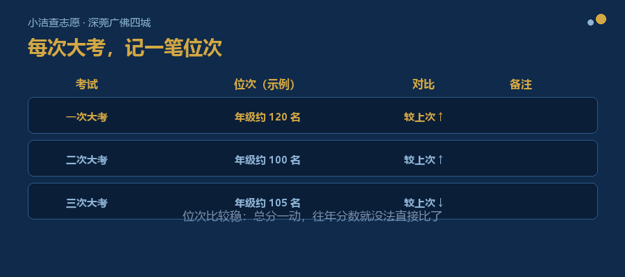

前阵子，一位初二家长问我：
我说：早。但也不早。
她问：这是什么意思？
我说，如果指的是“该研究怎么填志愿了”——那确实早了一年。
但如果指的是“该知道中考一共几条路、我家孩子在什么位置”——那已经不早了。
准备这个系列的时候，我把深圳、东莞、广州、佛山四市的招生文件，按时间排了一遍。
各市的招生工作意见、志愿填报通知、录取工作通知，一份份摊开。
方法很笨：不看内容，只看每份文件管的是哪一段时间。
排完之后，有件事很清楚——
我查到的四市文件，时间线几乎都压在初三下学期那几个月。
报名、填志愿、考试、录取，一份接一份，全挤在里面。
我原本以为，初二该有一份对应的东西。翻了几座城市，都没有专门给初二家长的文件。
也就是说：初二这一年，官方不会告诉你“你现在该做什么”。
这怪不得谁。官方文件是为“办事”写的，不是为“提前想”写的——它们只在事情发生的那几个月里，告诉你该怎么办。
所以这一年要补的功课，只能家长自己先做。也正是为什么，它值得提前一年——那一年你手里是空的，还有时间。
不用看政策，不用背规则。就三件。
很多家长心里的中考，是一道是非题：上普高，或者没上普高。
不是的。
深圳、东莞、广州、佛山，每一座城市都不止一条路：普通高中、中职、技工院校、中本贯通（有些城市叫“3+4”），此外还有自主招生等通道。
四城中考路径：普高 / 中职 / 技工院校 / 中本贯通（3+4）/ 自主招生
这些路，并不完全互斥。走不通这一条，不等于全都走不通。
初二要做的事，不是研究每条路怎么走，是先知道“原来有几条”。
有了这张地图，初三再往里看细的。
第二件，比规则本身更要紧。
同一座城市、同一个分数，孩子属于哪一类，能报的范围就不一样。
比如在深圳，考生分 A 类、C 类、D 类，报的其实是不同的池子；另外还有“名额分配”（大家常说的“指标生”），路径又不一样。
初二不用背这些规则，但可以先把一件事弄清楚：我家孩子属于哪一类。
这一件事定下来，以后你看到的每一条信息，才有地方落。
第三件，也是最多家长做反的一件。
分数会变。比如深圳中考总分，2026 年起从 610 分调整为 630 分——总分一动，往年分数就没法直接比了。
但位次不一样。位次（孩子这次考试在年级里大致排第几、或在哪一档）——这个坐标比较稳。
所以从初二开始，每次大考之后，记一笔：大概排在什么位置，跟上一次比是往前还是往后。
一年也就记十几次，每次两分钟。
这不是给孩子贴标签，是给自己一个坐标。

每次大考记一笔：大概排第几、往前还是往后
初三下学期那几个月，事情是挤在一起的：报名、模考、填志愿、等成绩、等录取。
那时候家长没有时间慢慢看文件——只能听别人说。
而初二这一年做的事，几乎不占时间：知道有几条路、弄清属于哪一类、每次大考后记一笔。
到填志愿那个月，你不是从零开始，而是从一张已经有了的地图开始。
这不是让你少慌一点，是让你少犯那种“当时不知道”的错。
（这一年要做的事，四座城市是一样的——因为你要先有地图，才谈得上认路。四座城市真正的差别，要等初三才咬人。）
这三件事现在做，到填志愿那个月，就是你手里现成的底子。我们正在做的 HSEE 择校助手，接的就是这个。
本来是给孩子多留一年从容，别弄成多紧张一年。
我的判断是：上面这三件事，都是家长在自己本子上做的功课——不用跟孩子说，也不该压到孩子身上。
今年该提前的，是家长的准备，不是孩子的压力。
这三件事，不用一次做完。我的想法是：先把“知道有几条路”和“搞清楚分类”两件做扎实，“位次”从下一次大考开始记——一步一步来，比一次做完更稳。你想先看哪一块，可以说给我听。